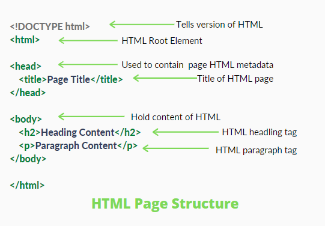

HTML stands for HyperText Markup Language. It is used to design web pages using a markup language. HTML is the combination of Hypertext and Markup language. Hypertext defines the link between the web pages. A markup language is used to define the text document within tag which defines the structure of web pages. This language is used to annotate (make notes for the computer) text so that a machine can understand it and manipulate text accordingly. Most markup languages (e.g. HTML) are human-readable. The language uses tags to define what manipulation has to be done on the text.
HTML is a markup language used by the browser to manipulate text, images, and other content, in order to display it in the required format. HTML was created by Tim Berners-Lee in 1991. The first-ever version of HTML was HTML 1.0, but the first standard version was HTML 2.0, published in 1999.
Elements and Tags: HTML uses predefined tags and elements which tell the browser how to properly display the content. Remember to include closing tags. If omitted, the browser applies the effect of the opening tag until the end of the page.
HTML page structure: The basic structure of an HTML page is laid out below. It contains the essential building-block elements (i.e. doctype declaration, HTML, head, title, and body elements) upon which all web pages are created.

Features of HTML:
Advantages:
Disadvantages: